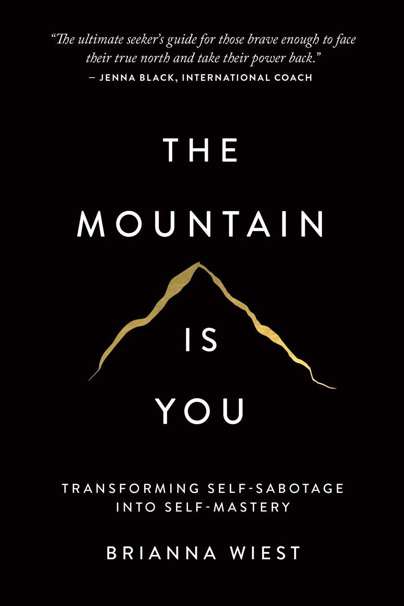

archive · 7
books
what I read, and what I kept from it.
RangeDavid Epstein The Practice of the Presence of GodBrother Lawrence
The Practice of the Presence of GodBrother Lawrence

The Mountain Is YouBrianna WiestA Small PlaceJamaica KincaidUna cosa spirituale. Non fare niente, altre forme d'arteVasco BrondiWomen RememberedHelen K. Bond, Joan E. TaylorThe Case for ChristLee StrobelThe Practice of the Presence of GodBrother Lawrencenothing matches.